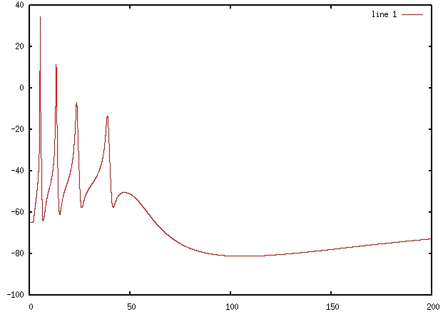

This is the readme for the model associated with the publication Xu J, Clancy CE. Ionic mechanisms of endogenous bursting in CA3 hippocampal pyramidal neurons: a model study. PLoS ONE. 2008 Apr 30;3(4):e2056. Usage: (linux/unix) After extracting the archive compile the model with a command like g++ ca3_single_compartment.cpp -o run Then run the file with a command like ./run > output.dat After completion output.dat contains the data that produced the bottom trace in figure 1 C.  This data is also available in the first two columns of a file, out_one, that was produced during the run. The other columns contain ionic currents as shown in figure 4. These model files were submitted by Dr Colleen Clancy.